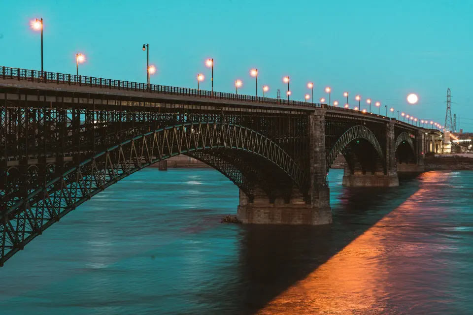
Красноярск · набережная у моста
Арка
Бар-ресторан Арка в Красноярске. Вечер начинается, когда на мосту зажигаются огни
Ужин у реки, музыка до двух ночи и терраса с видом на мост. Столик — в два касания, без звонка.
Огни зажигаются
Окна зала смотрят на мост: в шесть вечера на нём загораются фонари — и у нас начинается вечер. Стол у окна стоит занять заранее, его просят чаще всего.
- 4,9в 2ГИС — 312 оценок, 184 отзыва
- 17–02каждый день, без выходных
- 24стола у окон с видом на мост
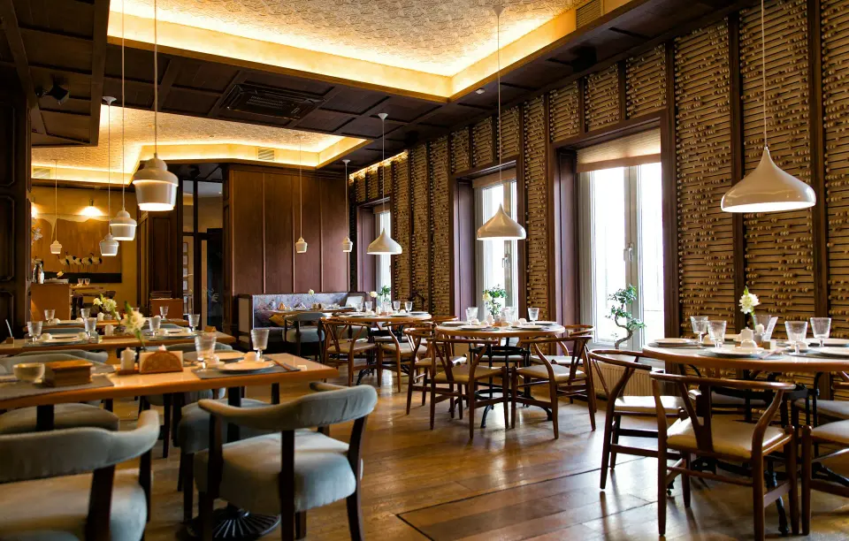
Здесь будет фото вашего шефа или хозяина вечера
Шеф-повар
Игорь
Игорь готовит на открытом огне: стейки из сибирской говядины, муксун и омуль с Енисея, хлеб из собственной пекарни. В меню — то, что он сам заказал бы у реки.
Компания
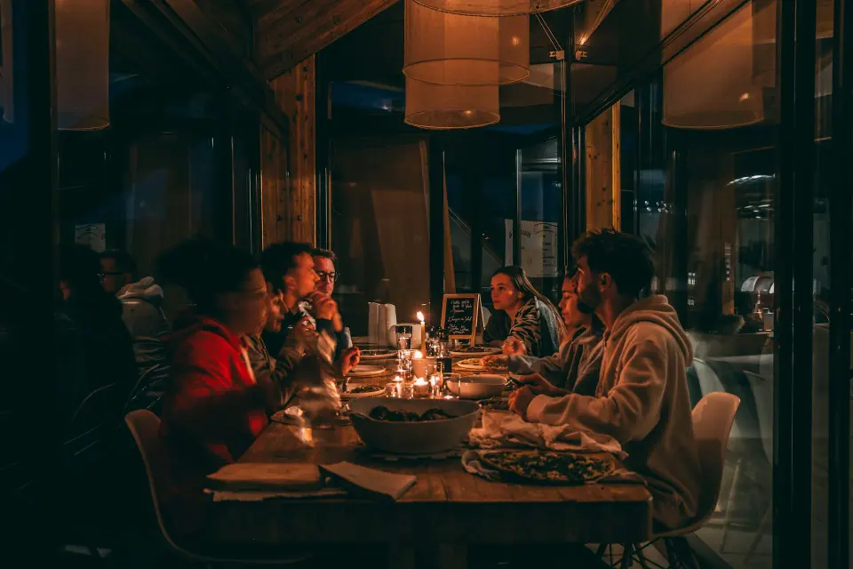
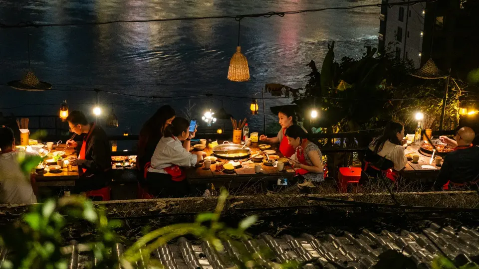
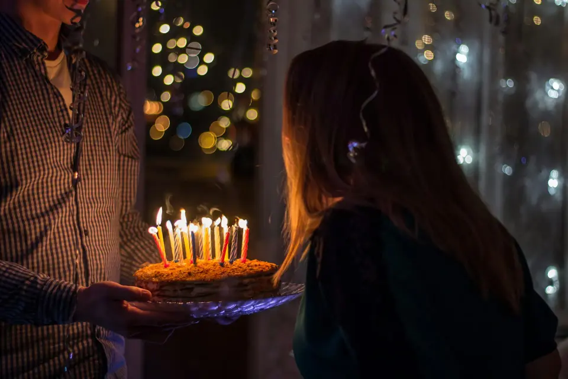

Дни рождения, свадьбы, корпоративы. Летом — терраса у самой воды, зимой — зал с панорамными окнами на мост. Меню банкета соберём под ваш бюджет.
- Стол, терраса или весь зал до 60 гостей
- Меню банкета — расчёт за 10 минут
- Торт и предзаказ подадут к началу вечера
Музыка
По пятницам и субботам — диджей, по четвергам — живой вечер. Афиша на месяц — в приложении и в боте.
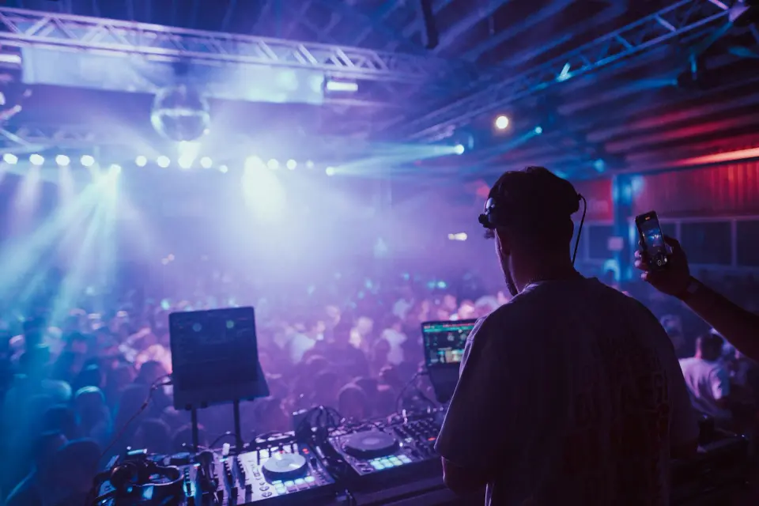
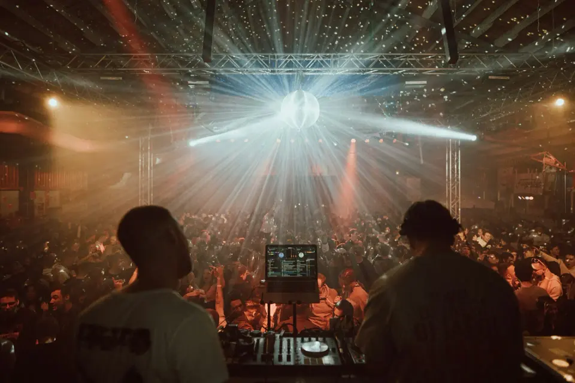
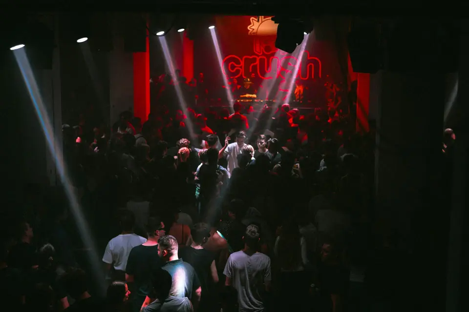
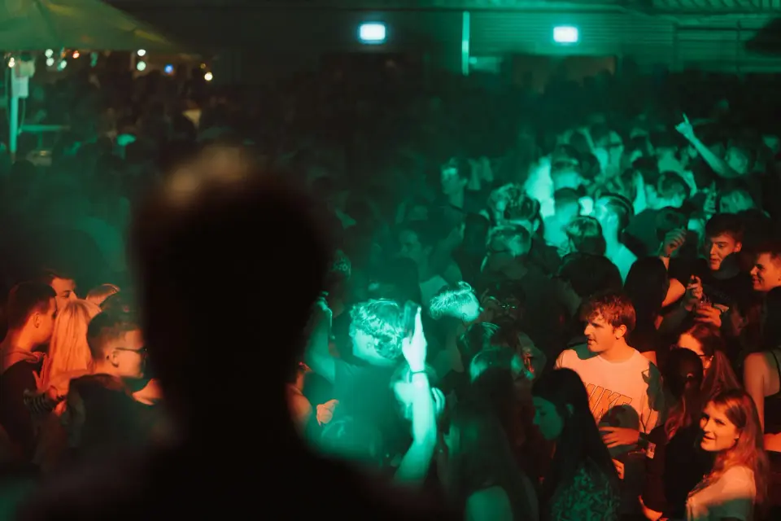
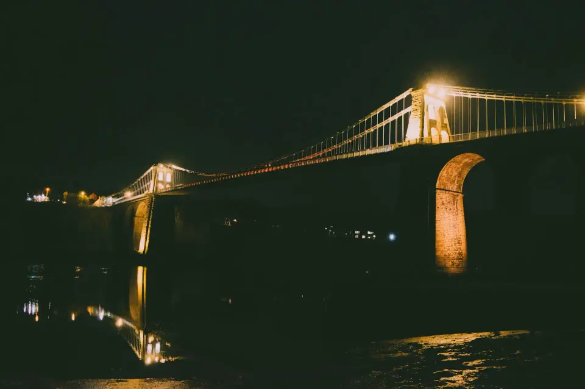
Встретимся под аркой
4,9 — 312 подтверждённых оценок и 184 отзывов в 2ГИС
Сидели у окна, смотрели, как зажигается мост. Стейк — лучший в городе, официант помог с выбором.
Отмечали юбилей на террасе: всё подали минута в минуту, торт вынесли под нашу песню.
Забронировали через бот за минуту, муксун заказали заранее — пришли, и он уже на столе.
В пятницу отличная музыка и при этом можно поговорить. Вернёмся.
В телефоне гостя
Приложение ресторана и бот брони в MAX и Telegram: гость бронирует стол, копит баллы, дарит сертификат, а вы видите всё в одном месте.
До завтра
Огни на мосту гаснут к утру, а мы открываемся снова в пять вечера. Столик на сегодня можно забронировать прямо сейчас.
- Адрес
- Красноярск, Набережная, 1 (демо)
2ГИС · Яндекс Карты - Часы
- каждый день с 17:00 до 02:00
- Связь
- +7 391 200-00-00 · Telegram
- Банкеты
- до 60 гостей — весь зал и терраса у реки
- Парковка
- у набережной, бесплатно после 19:00
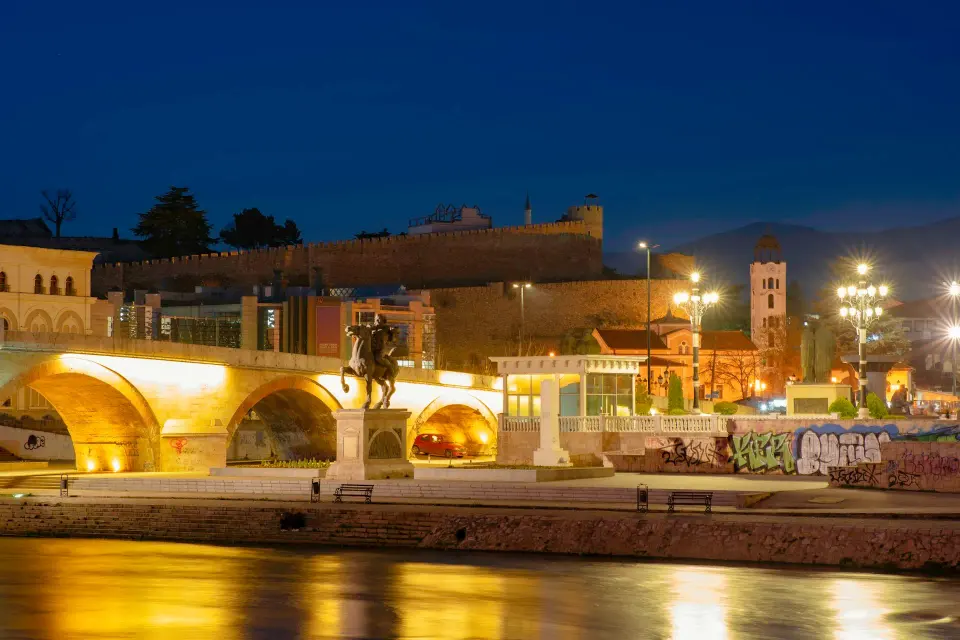